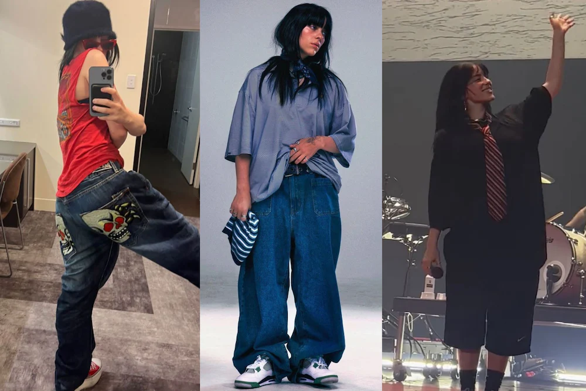

El estilo musical de Billie Eilish se caracteriza por la combinación de géneros como el pop alternativo, el electropop, el indie y el dark pop. Su voz suave, casi susurrada, crea una atmósfera íntima y misteriosa que se ha vuelto su sello distintivo.
Sus letras suelen explorar temas profundos como la ansiedad, la depresión, la fama, el amor no correspondido y la identidad personal. Su música está producida principalmente por su hermano Finneas, con quien crea un sonido minimalista, emocional y experimental.
En cuanto a su estilo visual, Billie ha roto los estándares convencionales de la moda femenina. Durante sus primeros años de fama, adoptó una estética “oversized” (ropa grande y suelta) como forma de proteger su cuerpo de la sexualización mediática.
Con el tiempo, ha evolucionado, experimentando con looks más elegantes y sensuales, sin perder su autenticidad. Billie transmite un mensaje poderoso: vestir como quieras es parte de tu libertad personal.
| Estilo Musical | Estilo Visual |
|---|---|
| Voz suave, susurrada | Ropa oversized, colores oscuros |
| Pop alternativo, dark pop | Peinados coloridos y excéntricos |
| Letras introspectivas y emocionales | Look desafiante, sin seguir modas |
| Producción minimalista con beats electrónicos | Transición a un estilo más clásico en 2021-2022 |